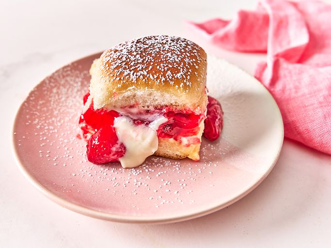

Strawberry Cheesecake Sliders
Home

Description
These strawberry cheesecake sliders are very easy to make. Whip up a sweetened cream cheese filling, add a layer of strawberry pie filling, and toast sliders in the oven, for a fun brunch dessert.
Ingredients
- 5 oz cream cheese, softened
- ½ cup confectioners sugar, plus more for topping
- 1 large egg
- 12 Hawaiian rolls
- 21 oz strawberry pie filling
- 3 tbsp butter, melted
Steps
- Preheat the oven to 350 degrees F (180 degrees C).
- Combine cream cheese and powdered sugar in a large mixing bowl. Using a hand mixer on medium speed, mix until well combined. Add egg to mixture and beat until light and fluffy.
- Slice rolls in half horizontally, without separating them. Place the bottom layer back into the cardboard packaging; set package onto a baking sheet.
- Spoon cream cheese filling onto bottom layer. Top with strawberry pie filling. Place top half of rolls on and brush with melted butter. Cover with foil.
- Bake in the preheated oven for 20 minutes, then uncover and cook until toasted, 5 to 8 minutes more. Dust with powdered sugar before serving.